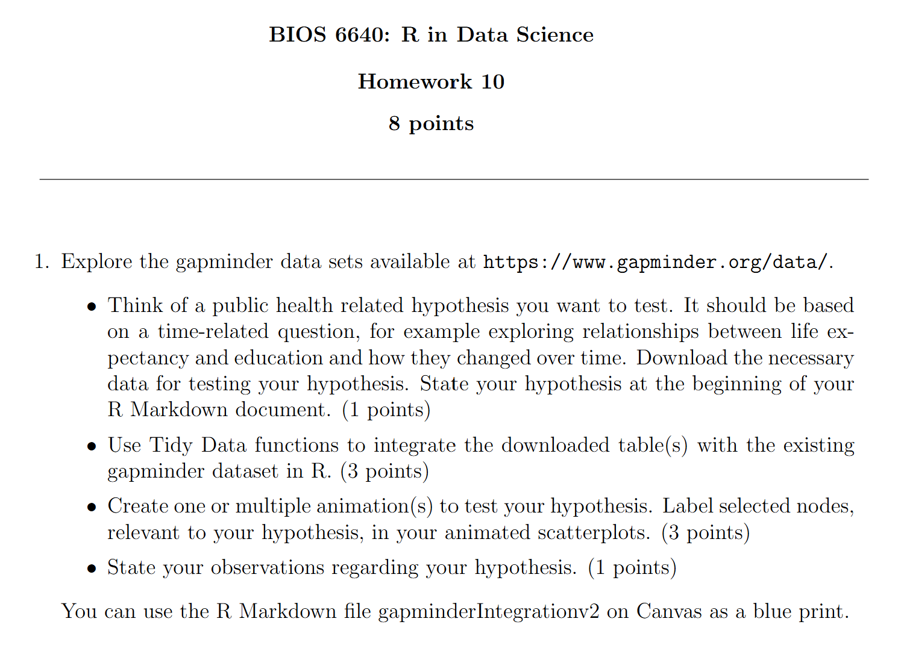
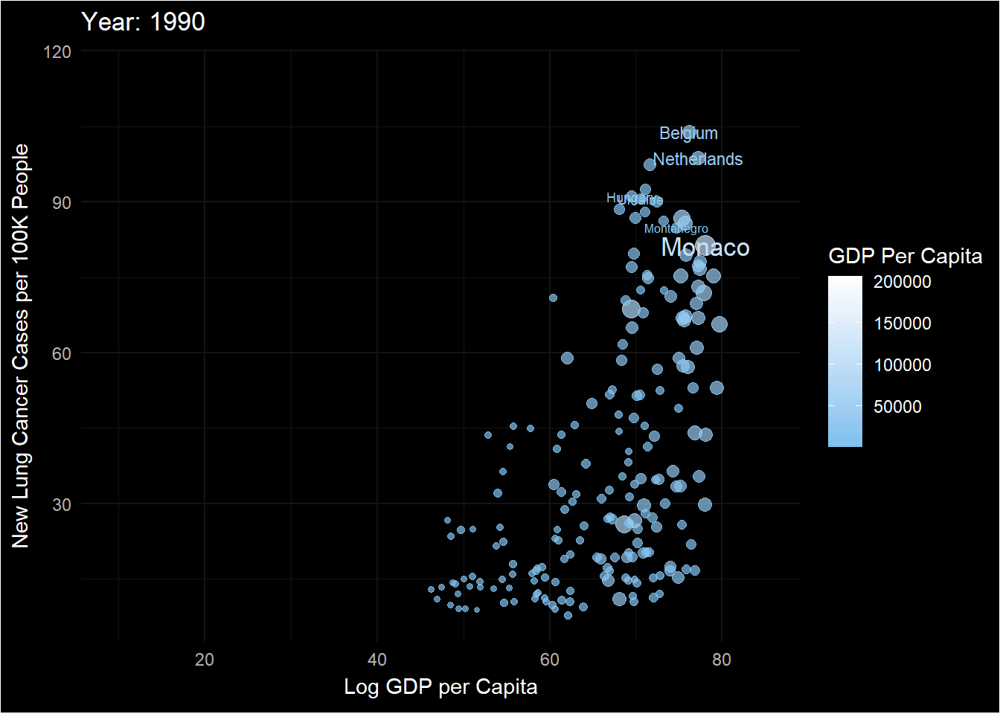
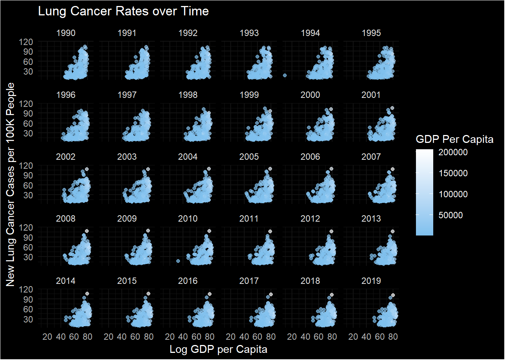
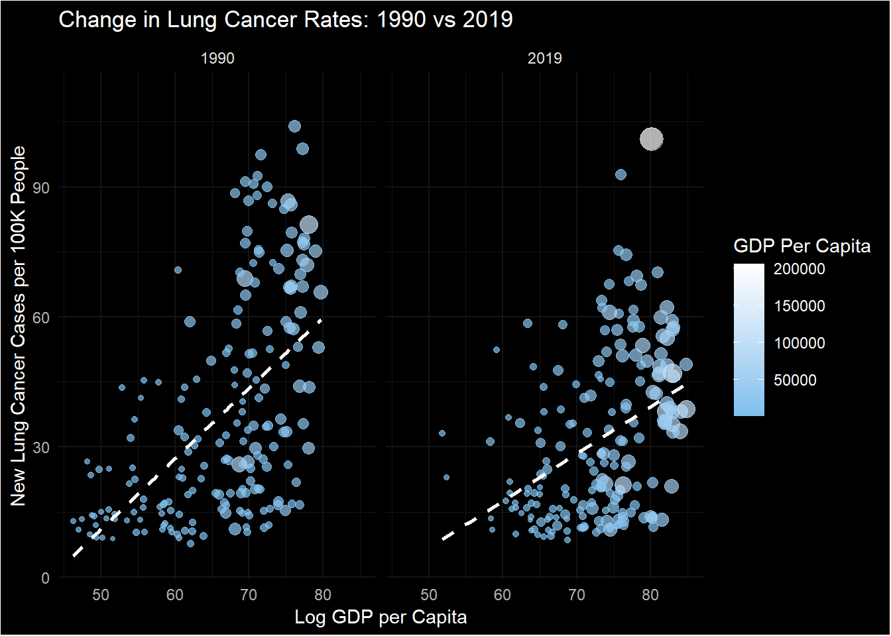
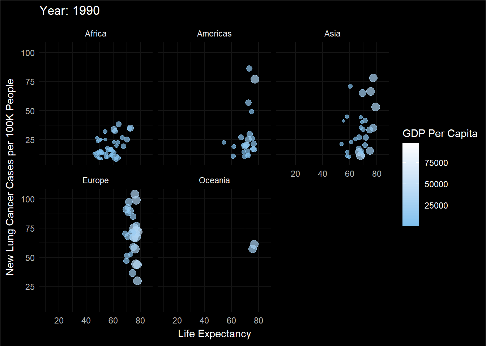

library(gapminder)
library(tidyverse)
library(ggdark) # Used for fun dark themes for plots
library(kableExtra)
library(gganimate)Animated Plot - Global Lung Cancer Rates
Introduction
In this mini-project we perform data tidying, joining, and ggplot animation to answer a public health research question using data sets from the gapminder data base.

Research Question
I am interested in trends in lung cancer in men over time (because the data sets from Gapminder are split by sex).
- Hypothesis: I predict that over time, as life expectancy increases, lung cancer rates will increase.
- Additionally, as GDP increases, cancer rates should decrease.
This research question is inspired by a TED talk which discussed how society has progressed in medicine so much that we have “killed all other killers”, allowing cancer to become more common, as longer life expectancies increase the chances of cancerous mutations occurring.
Data Preparation
Load Libraries
All data sets are from Gapminder.org
Read in Lung Cancer Data
# Read in data set
data_cancer <- read_csv(r"(C:\Users\sviea\Downloads\lung_cancer_new_cases_per_100000_men.csv)")Rows: 207 Columns: 68
── Column specification ────────────────────────────────────────────────────────
Delimiter: ","
chr (1): country
dbl (67): 1953, 1954, 1955, 1956, 1957, 1958, 1959, 1960, 1961, 1962, 1963, ...
ℹ Use `spec()` to retrieve the full column specification for this data.
ℹ Specify the column types or set `show_col_types = FALSE` to quiet this message.# Examine data
pretty_print(head(data_cancer))| country | 1953 | 1954 | 1955 | 1956 | 1957 | 1958 | 1959 | 1960 | 1961 | 1962 | 1963 | 1964 | 1965 | 1966 | 1967 | 1968 | 1969 | 1970 | 1971 | 1972 | 1973 | 1974 | 1975 | 1976 | 1977 | 1978 | 1979 | 1980 | 1981 | 1982 | 1983 | 1984 | 1985 | 1986 | 1987 | 1988 | 1989 | 1990 | 1991 | 1992 | 1993 | 1994 | 1995 | 1996 | 1997 | 1998 | 1999 | 2000 | 2001 | 2002 | 2003 | 2004 | 2005 | 2006 | 2007 | 2008 | 2009 | 2010 | 2011 | 2012 | 2013 | 2014 | 2015 | 2016 | 2017 | 2018 | 2019 |
|---|---|---|---|---|---|---|---|---|---|---|---|---|---|---|---|---|---|---|---|---|---|---|---|---|---|---|---|---|---|---|---|---|---|---|---|---|---|---|---|---|---|---|---|---|---|---|---|---|---|---|---|---|---|---|---|---|---|---|---|---|---|---|---|---|---|---|---|
| Afghanistan | NA | NA | NA | NA | NA | NA | NA | NA | NA | NA | NA | NA | NA | NA | NA | NA | NA | NA | NA | NA | NA | NA | NA | NA | NA | NA | NA | NA | NA | NA | NA | NA | NA | NA | NA | NA | NA | 21.5 | 21.1 | 20.8 | 20.5 | 20.4 | 20.2 | 20.0 | 19.9 | 19.8 | 19.7 | 19.8 | 19.9 | 19.8 | 19.9 | 20.1 | 20.0 | 20.0 | 19.9 | 19.9 | 19.8 | 19.8 | 19.7 | 19.6 | 19.5 | 19.5 | 19.4 | 19.4 | 19.3 | 19.3 | 19.2 |
| Angola | NA | NA | NA | NA | NA | NA | NA | NA | NA | NA | NA | NA | NA | NA | NA | NA | NA | NA | NA | NA | NA | NA | NA | NA | NA | NA | NA | NA | NA | NA | NA | NA | NA | NA | NA | NA | NA | 24.8 | 24.8 | 24.8 | 24.9 | 24.8 | 24.6 | 24.2 | 24.1 | 24.3 | 24.4 | 24.1 | 23.7 | 22.9 | 22.6 | 23.0 | 22.5 | 22.7 | 22.7 | 23.0 | 23.4 | 23.6 | 23.8 | 24.1 | 24.1 | 23.7 | 23.7 | 23.6 | 23.6 | 23.7 | 23.8 |
| Albania | NA | NA | NA | NA | NA | NA | NA | NA | NA | NA | NA | NA | NA | NA | NA | NA | NA | NA | NA | NA | NA | NA | NA | NA | NA | NA | NA | NA | NA | NA | NA | NA | NA | NA | NA | NA | NA | 52.5 | 52.0 | 49.0 | 46.6 | 43.8 | 45.1 | 46.8 | 47.3 | 47.1 | 46.4 | 46.1 | 43.8 | 44.1 | 45.2 | 44.8 | 42.8 | 40.3 | 38.7 | 39.3 | 39.3 | 39.5 | 40.6 | 41.1 | 41.8 | 43.1 | 44.4 | 44.7 | 44.9 | 45.1 | 45.2 |
| Andorra | NA | NA | NA | NA | NA | NA | NA | NA | NA | NA | NA | NA | NA | NA | NA | NA | NA | NA | NA | NA | NA | NA | NA | NA | NA | NA | NA | NA | NA | NA | NA | NA | NA | NA | NA | NA | NA | 75.2 | 75.4 | 75.7 | 74.7 | 73.8 | 73.0 | 72.2 | 71.7 | 71.3 | 70.9 | 70.4 | 70.0 | 69.7 | 69.6 | 69.8 | 69.2 | 68.8 | 68.3 | 67.8 | 67.3 | 66.5 | 66.2 | 65.6 | 65.3 | 64.8 | 63.4 | 63.1 | 62.8 | 62.5 | 62.1 |
| UAE | NA | NA | NA | NA | NA | NA | NA | NA | NA | NA | NA | NA | NA | NA | NA | NA | NA | NA | NA | NA | NA | NA | NA | NA | NA | NA | NA | NA | NA | NA | NA | NA | NA | NA | NA | NA | NA | 25.9 | 26.1 | 26.4 | 26.7 | 27.5 | 27.9 | 28.4 | 28.9 | 28.9 | 29.0 | 30.2 | 30.4 | 30.5 | 30.1 | 29.9 | 29.5 | 28.2 | 27.7 | 26.6 | 25.9 | 25.3 | 24.8 | 24.2 | 23.8 | 23.3 | 22.9 | 22.5 | 22.2 | 21.8 | 21.5 |
| Argentina | NA | NA | NA | NA | NA | NA | NA | NA | NA | NA | NA | NA | NA | NA | NA | NA | NA | NA | NA | NA | NA | NA | NA | NA | NA | NA | NA | NA | NA | NA | NA | NA | NA | NA | NA | NA | NA | 56.8 | 56.2 | 57.5 | 56.0 | 55.2 | 54.6 | 55.4 | 55.2 | 54.9 | 54.9 | 51.8 | 51.2 | 51.8 | 50.9 | 48.5 | 47.4 | 46.8 | 47.8 | 45.8 | 44.5 | 43.4 | 43.0 | 42.3 | 41.3 | 39.5 | 39.1 | 40.2 | 40.3 | 39.8 | 39.8 |
We have NA values for 1953-1989. Let’s just get rid of those now.
# Remove unnecessary columns with missing values
data_cancer <- data_cancer |>
select(-c("1953":"1989"))
# Double check for correct removal
pretty_print(head(data_cancer))| country | 1990 | 1991 | 1992 | 1993 | 1994 | 1995 | 1996 | 1997 | 1998 | 1999 | 2000 | 2001 | 2002 | 2003 | 2004 | 2005 | 2006 | 2007 | 2008 | 2009 | 2010 | 2011 | 2012 | 2013 | 2014 | 2015 | 2016 | 2017 | 2018 | 2019 |
|---|---|---|---|---|---|---|---|---|---|---|---|---|---|---|---|---|---|---|---|---|---|---|---|---|---|---|---|---|---|---|
| Afghanistan | 21.5 | 21.1 | 20.8 | 20.5 | 20.4 | 20.2 | 20.0 | 19.9 | 19.8 | 19.7 | 19.8 | 19.9 | 19.8 | 19.9 | 20.1 | 20.0 | 20.0 | 19.9 | 19.9 | 19.8 | 19.8 | 19.7 | 19.6 | 19.5 | 19.5 | 19.4 | 19.4 | 19.3 | 19.3 | 19.2 |
| Angola | 24.8 | 24.8 | 24.8 | 24.9 | 24.8 | 24.6 | 24.2 | 24.1 | 24.3 | 24.4 | 24.1 | 23.7 | 22.9 | 22.6 | 23.0 | 22.5 | 22.7 | 22.7 | 23.0 | 23.4 | 23.6 | 23.8 | 24.1 | 24.1 | 23.7 | 23.7 | 23.6 | 23.6 | 23.7 | 23.8 |
| Albania | 52.5 | 52.0 | 49.0 | 46.6 | 43.8 | 45.1 | 46.8 | 47.3 | 47.1 | 46.4 | 46.1 | 43.8 | 44.1 | 45.2 | 44.8 | 42.8 | 40.3 | 38.7 | 39.3 | 39.3 | 39.5 | 40.6 | 41.1 | 41.8 | 43.1 | 44.4 | 44.7 | 44.9 | 45.1 | 45.2 |
| Andorra | 75.2 | 75.4 | 75.7 | 74.7 | 73.8 | 73.0 | 72.2 | 71.7 | 71.3 | 70.9 | 70.4 | 70.0 | 69.7 | 69.6 | 69.8 | 69.2 | 68.8 | 68.3 | 67.8 | 67.3 | 66.5 | 66.2 | 65.6 | 65.3 | 64.8 | 63.4 | 63.1 | 62.8 | 62.5 | 62.1 |
| UAE | 25.9 | 26.1 | 26.4 | 26.7 | 27.5 | 27.9 | 28.4 | 28.9 | 28.9 | 29.0 | 30.2 | 30.4 | 30.5 | 30.1 | 29.9 | 29.5 | 28.2 | 27.7 | 26.6 | 25.9 | 25.3 | 24.8 | 24.2 | 23.8 | 23.3 | 22.9 | 22.5 | 22.2 | 21.8 | 21.5 |
| Argentina | 56.8 | 56.2 | 57.5 | 56.0 | 55.2 | 54.6 | 55.4 | 55.2 | 54.9 | 54.9 | 51.8 | 51.2 | 51.8 | 50.9 | 48.5 | 47.4 | 46.8 | 47.8 | 45.8 | 44.5 | 43.4 | 43.0 | 42.3 | 41.3 | 39.5 | 39.1 | 40.2 | 40.3 | 39.8 | 39.8 |
Read in GDP Per Capita Data
The gapminder data set that comes with the tidyverse package only goes up to 2007. To get a more complete data set we will read in the GDP per capita data set downloaded from the gapminder website.
# Read in data set
data_gdp <- read_csv(r"(C:\Users\sviea\Documents\R for Data Science\gdp_pcap.csv)")Rows: 195 Columns: 302
── Column specification ────────────────────────────────────────────────────────
Delimiter: ","
chr (199): country, 1901, 1903, 1905, 1906, 1907, 1908, 1909, 1910, 1911, 19...
dbl (103): 1800, 1801, 1802, 1803, 1804, 1805, 1806, 1807, 1808, 1809, 1810,...
ℹ Use `spec()` to retrieve the full column specification for this data.
ℹ Specify the column types or set `show_col_types = FALSE` to quiet this message.# Filter data set
data_gdp <- data_gdp |>
select(c("country", "1990":"2019"))
# Examine data
pretty_print(head(data_gdp))| country | 1990 | 1991 | 1992 | 1993 | 1994 | 1995 | 1996 | 1997 | 1998 | 1999 | 2000 | 2001 | 2002 | 2003 | 2004 | 2005 | 2006 | 2007 | 2008 | 2009 | 2010 | 2011 | 2012 | 2013 | 2014 | 2015 | 2016 | 2017 | 2018 | 2019 |
|---|---|---|---|---|---|---|---|---|---|---|---|---|---|---|---|---|---|---|---|---|---|---|---|---|---|---|---|---|---|---|
| Afghanistan | 1850 | 1710 | 1650 | 1140 | 855 | 1280 | 1220 | 1180 | 1130 | 1090 | 1070 | 979 | 1230 | 1260 | 1240 | 1330 | 1360 | 1530 | 1560 | 1820 | 2030 | 1960 | 2120 | 2170 | 2150 | 2110 | 2100 | 2100 | 2060 | 2080 |
| Angola | 4000 | 4050 | 3810 | 2890 | 2920 | 3340 | 3770 | 4000 | 4150 | 4190 | 4270 | 4380 | 4900 | 4950 | 5370 | 6040 | 6590 | 7310 | 7860 | 7650 | 7690 | 7660 | 8010 | 8100 | 8180 | 7970 | 7490 | 7220 | 6880 | 6600 |
| Albania | 4750 | 3460 | 3260 | 3600 | 3910 | 4410 | 4830 | 4330 | 4750 | 5410 | 5840 | 6390 | 6710 | 7130 | 7560 | 8030 | 8560 | 9140 | 9910 | 10.3k | 10.7k | 11.1k | 11.2k | 11.4k | 11.6k | 11.9k | 12.3k | 12.8k | 13.3k | 13.7k |
| Andorra | 40.4k | 40k | 39k | 37.5k | 37.5k | 38k | 39.7k | 43.6k | 45.4k | 47.2k | 47k | 47.4k | 47.7k | 51.9k | 54.9k | 60.4k | 65.2k | 66.5k | 63.7k | 64.5k | 60.5k | 60.9k | 57.9k | 55.7k | 56.6k | 56.5k | 57.5k | 56.4k | 56.2k | 56.3k |
| UAE | 72.1k | 72k | 73.2k | 73.4k | 77.6k | 81.9k | 84.6k | 88.6k | 86k | 85.7k | 92k | 90.1k | 89.2k | 93.6k | 98.8k | 97.3k | 94.1k | 81.7k | 71.1k | 59k | 56.4k | 59.2k | 59.7k | 62.1k | 64.1k | 67.8k | 70.9k | 70.9k | 71.2k | 71.5k |
| Argentina | 13.4k | 14.5k | 15.6k | 16.6k | 17.4k | 16.7k | 17.5k | 18.7k | 19.3k | 18.5k | 18.2k | 17.2k | 15.2k | 16.4k | 17.7k | 19.1k | 20.5k | 22.2k | 22.9k | 21.3k | 23.4k | 24.6k | 24k | 24.3k | 23.5k | 23.9k | 23.1k | 23.5k | 22.7k | 22k |
Note: We have mixed data representation here! Some variables have a “k” to represent 10,000. We will have to process this.
Read in Life Expectancy Data
# Read in data set
data_lex <- read_csv(r"(C:\Users\sviea\Documents\R for Data Science\lex.csv)")Rows: 196 Columns: 302
── Column specification ────────────────────────────────────────────────────────
Delimiter: ","
chr (1): country
dbl (301): 1800, 1801, 1802, 1803, 1804, 1805, 1806, 1807, 1808, 1809, 1810,...
ℹ Use `spec()` to retrieve the full column specification for this data.
ℹ Specify the column types or set `show_col_types = FALSE` to quiet this message.# Filter data set
data_lex <- data_lex |>
select(c("country", "1990":"2019"))
# Examine data
pretty_print(head(data_lex))| country | 1990 | 1991 | 1992 | 1993 | 1994 | 1995 | 1996 | 1997 | 1998 | 1999 | 2000 | 2001 | 2002 | 2003 | 2004 | 2005 | 2006 | 2007 | 2008 | 2009 | 2010 | 2011 | 2012 | 2013 | 2014 | 2015 | 2016 | 2017 | 2018 | 2019 |
|---|---|---|---|---|---|---|---|---|---|---|---|---|---|---|---|---|---|---|---|---|---|---|---|---|---|---|---|---|---|---|
| Afghanistan | 53.8 | 53.8 | 54.2 | 54.4 | 53.9 | 54.3 | 54.7 | 54.5 | 53.3 | 54.7 | 54.7 | 54.8 | 55.5 | 56.5 | 57.1 | 57.6 | 58.0 | 58.5 | 59.2 | 59.9 | 60.5 | 61.0 | 61.4 | 61.9 | 61.9 | 61.9 | 62.0 | 62.9 | 62.7 | 63.3 |
| Angola | 49.7 | 50.3 | 50.3 | 49.0 | 50.3 | 51.2 | 51.7 | 51.6 | 50.6 | 51.9 | 52.8 | 53.4 | 54.5 | 55.1 | 55.5 | 56.4 | 57.0 | 58.0 | 58.8 | 59.5 | 60.2 | 60.8 | 61.4 | 62.1 | 63.0 | 63.5 | 63.9 | 64.2 | 64.6 | 65.1 |
| Albania | 72.8 | 72.6 | 73.2 | 73.8 | 74.6 | 74.6 | 74.5 | 72.9 | 74.8 | 75.1 | 75.4 | 76.0 | 75.9 | 75.6 | 75.8 | 76.2 | 76.9 | 77.5 | 77.6 | 78.0 | 78.1 | 78.1 | 78.2 | 78.3 | 78.2 | 78.1 | 78.2 | 78.3 | 78.4 | 78.5 |
| Andorra | 79.0 | 79.1 | 79.2 | 79.3 | 79.5 | 79.8 | 80.0 | 80.2 | 80.4 | 80.6 | 80.8 | 80.9 | 81.1 | 81.2 | 81.3 | 81.4 | 81.5 | 81.7 | 81.8 | 81.8 | 81.8 | 81.9 | 81.9 | 82.0 | 82.0 | 82.0 | 82.1 | 82.1 | 82.1 | 82.2 |
| UAE | 68.7 | 68.7 | 68.8 | 68.8 | 68.7 | 68.8 | 68.9 | 69.0 | 69.2 | 69.2 | 69.1 | 69.2 | 69.4 | 69.3 | 69.1 | 69.2 | 69.5 | 70.0 | 70.4 | 70.6 | 70.8 | 71.0 | 71.2 | 71.6 | 73.0 | 73.2 | 73.4 | 73.5 | 73.7 | 73.9 |
| Argentina | 72.5 | 72.7 | 72.8 | 73.0 | 73.4 | 73.4 | 73.5 | 73.6 | 73.7 | 73.8 | 74.2 | 74.3 | 74.3 | 74.4 | 74.9 | 75.3 | 75.4 | 75.3 | 75.7 | 75.8 | 75.9 | 76.0 | 76.2 | 76.3 | 76.5 | 76.5 | 76.2 | 76.3 | 76.5 | 76.6 |
Integrate Data Sets
Transpose
First we will pivot all data sets to be in long form
# Pivot lung cancer data set
data_cancer <- data_cancer |>
pivot_longer(cols = c("1990":"2019"), names_to = "year", values_to = "lung_cancer") |>
mutate(year = as.integer(year))
# Double check
pretty_print(head(data_cancer))| country | year | lung_cancer |
|---|---|---|
| Afghanistan | 1990 | 21.5 |
| Afghanistan | 1991 | 21.1 |
| Afghanistan | 1992 | 20.8 |
| Afghanistan | 1993 | 20.5 |
| Afghanistan | 1994 | 20.4 |
| Afghanistan | 1995 | 20.2 |
# Pivot gdp data set
data_gdp <- data_gdp |>
pivot_longer(cols = c("1990":"2019"), names_to = "year", values_to = "gdpPercap") |>
mutate(year = as.integer(year))
# Custom function to clean gdpPercap values
clean_gdp <- function(gdp) {
ifelse(grepl("k", gdp),
as.numeric(sub("k", "", gdp)) * 1000,
as.numeric(gdp))
}
# Apply the custom function and convert gdpPercap to numeric
data_gdp <- data_gdp %>%
mutate(gdpPercap = clean_gdp(gdpPercap))
# Fix data type of gdpPercap
data_gdp <- data_gdp |>
mutate(gdpPercap = as.double(gdpPercap))
# Double check
pretty_print(head(data_gdp))| country | year | gdpPercap |
|---|---|---|
| Afghanistan | 1990 | 1850 |
| Afghanistan | 1991 | 1710 |
| Afghanistan | 1992 | 1650 |
| Afghanistan | 1993 | 1140 |
| Afghanistan | 1994 | 855 |
| Afghanistan | 1995 | 1280 |
# Pivot lex data set
data_lex <- data_lex |>
pivot_longer(cols = c("1990":"2019"), names_to = "year", values_to = "life_expectancy") |>
mutate(year = as.integer(year))
# Double check
pretty_print(head(data_lex))| country | year | life_expectancy |
|---|---|---|
| Afghanistan | 1990 | 53.8 |
| Afghanistan | 1991 | 53.8 |
| Afghanistan | 1992 | 54.2 |
| Afghanistan | 1993 | 54.4 |
| Afghanistan | 1994 | 53.9 |
| Afghanistan | 1995 | 54.3 |
Merge
And then merge the data sets.
# Get continent info from gapminder
data_cont <- gapminder |>
select(country, continent) |>
distinct()
# Perform join statements
data_merged <- data_cancer |>
left_join(data_gdp) |>
left_join(data_lex) |>
left_join(data_cont)Joining with `by = join_by(country, year)`
Joining with `by = join_by(country, year)`
Joining with `by = join_by(country)`# Double check for correct merging
pretty_print(head(data_merged))| country | year | lung_cancer | gdpPercap | life_expectancy | continent |
|---|---|---|---|---|---|
| Afghanistan | 1990 | 21.5 | 1850 | 53.8 | Asia |
| Afghanistan | 1991 | 21.1 | 1710 | 53.8 | Asia |
| Afghanistan | 1992 | 20.8 | 1650 | 54.2 | Asia |
| Afghanistan | 1993 | 20.5 | 1140 | 54.4 | Asia |
| Afghanistan | 1994 | 20.4 | 855 | 53.9 | Asia |
| Afghanistan | 1995 | 20.2 | 1280 | 54.3 | Asia |
Animations
All Countries Over Time
# Create lables for countries with highest lung cancer rates at any time point
labels <- data_merged |>
group_by(country) |>
summarise(max_cancer = max(lung_cancer)) |>
arrange(desc(max_cancer)) |>
top_n(6) |>
pull(country)
# Create plot
ggplot(data_merged, aes(x = life_expectancy, y = lung_cancer, color = gdpPercap, size = gdpPercap)) +
geom_point(alpha = 0.7) +
geom_text(show.legend = FALSE, aes(label = ifelse(country %in% labels, as.character(country), ''))) +
dark_theme_minimal() +
scale_color_gradient(low = "skyblue2", high = "white") +
labs(title = "Year: {frame_time}",
y = "New Lung Cancer Cases per 100K People",
x = "Log GDP per Capita",
color = "GDP Per Capita") +
transition_time(year) +
guides(size = "none")
We can see Monaco increase over time to become the country with the highest lung cancer rates in men in 2019. We can also see Hungary at one point be the country with the highest lung cancer rates, but then decrease drastically to be more in the middle. Finally, Montenegro slowly increases to become the country with the second highest lung cancer rates.
We can also see some countries like Rwanda have a drastic dip in their population during tumultuous years.
Let’s create a plot by year so we can isolate any timepoints where the pattern changes
# Create plot
ggplot(data_merged, aes(x = life_expectancy, y = lung_cancer, color = gdpPercap)) +
geom_point(alpha = 0.7) +
dark_theme_minimal() +
scale_color_gradient(low = "skyblue2", high = "white") +
labs(title = "Lung Cancer Rates over Time",
y = "New Lung Cancer Cases per 100K People",
x = "Log GDP per Capita",
color = "GDP Per Capita") +
guides(size = "none") +
facet_wrap(~year)
There appears to be a decrease in the rate of new lung cancer cases over time. Let’s isolate.
Difference in Lung Cancer from 1990 to 2019
# Create plot
data_merged |> filter(year ==1990 | year == 2019) |>
ggplot(aes(x = life_expectancy, y = lung_cancer, color = gdpPercap, size = gdpPercap)) +
geom_point(alpha = 0.7) +
dark_theme_minimal() +
scale_color_gradient(low = "skyblue2", high = "white") +
labs(title = "Change in Lung Cancer Rates: 1990 vs 2019",
y = "New Lung Cancer Cases per 100K People",
x = "Log GDP per Capita",
color = "GDP Per Capita") +
guides(size = "none") +
facet_wrap(~year) +
geom_smooth(method = "lm", se = F, color = "white", linetype = "dashed", alpha = 0.3)
We can see that the slopes are different. Showing that in 2019, each one year increase in age is associated with LESS of an increase in new lung cancer cases than it was in 1990.
This is preliminary evidence that we as a planet are getting a better control over cancer by slightly decreasing the rate of new cases as the global population gets older.
By Continent
Note: Some countries were not in the gapminder data set and thus did not have a corresponding continent. I have filtered them out.
# Perform join statements
data_merged <- data_cancer |>
left_join(data_gdp) |>
left_join(data_lex) |>
right_join(data_cont) # Right join here because we only want countries that were in the gapminder dataset
# Create plot
ggplot(data_merged, aes(x = life_expectancy, y = lung_cancer, color = gdpPercap, size = gdpPercap)) +
geom_point(alpha = 0.7) +
dark_theme_minimal() +
scale_color_gradient(low = "skyblue2", high = "white") +
labs(title = "Year: {frame_time}",
y = "New Lung Cancer Cases per 100K People",
x = "Life Expectancy",
color = "GDP Per Capita") +
transition_time(year) +
guides(size = "none") +
facet_wrap(~continent)
We can see countries in Africa increase in life expectancy over time! They also appear to be slowly increasing in new lung cancer cases.
We can also see that continents like the Americas, Asia, and Europe already had a high life expectancy starting in 1990. We can also see these countries slowly decrease in new cancer rates over time!
Observations
We do see an overall linear trend, where for all countries, increased life expectancy is associated with an increase in new lung cancer cases per 100k people.
When broken down by continent, we can see Africa slowly increase in new lung cancer cases as its population life expectancies increase
Continents with higher GDP per capita on the hand (Europe, Americas, Asia) however, show a decrease in new lung cancer cases over time
After 2010, there appears to be a trend in most countries of a decrease in new lung cancer cases. This may be due to improvements in efforts to decrease cancer (e.g. anti-smoking campaigns)
Monaco became the country with the highest lung cancer rate in 2019. Hungary held this position, but decreased in new lung cancer cases in time, likely due to intervention efforts.